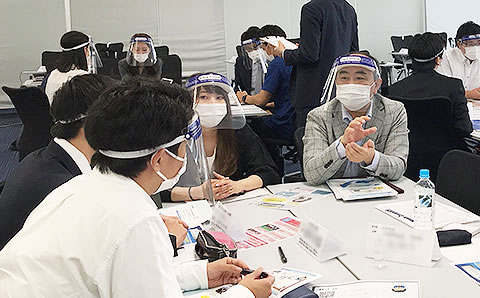
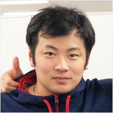
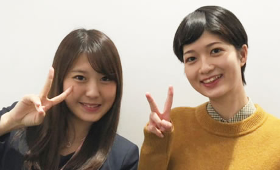
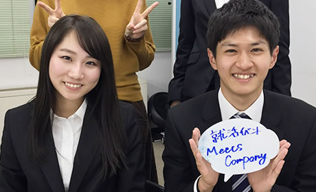

Meets Companyとは？
ABOUT US
MeetsCompanyって何？
MeetsCompanyは優良企業と出会うことができる座談会形式の合同説明会です。企業の社長や人事の採用権をもつ方と直接近い距離で話すことができます。最大8社の社長や人事と直接話すことで、自分の疑問点や業界についての理解がかなり深めることができます。また、社長や人事から直接内定を頂けることも！また、合同説明会後にプロの就活アドバイザーと面談し、あなたの就活の不安や悩みを解決致します。それがMeetsCompanyの就活サービスです。
厳選3,500社以上※の企業からあなたにベストな企業をご紹介！就活のプロが個別で徹底サポート
-
新卒紹介実績
業界 1 位※
-
年間内定承諾
5,200 名※
-
イベント開催年間
1,500 回※
-
リピート率
84 ％
- ※自社調べ
MeetsCompanyなら！
-

最大8社と出会える合同説明会
MeetsCompanyでは、企業の代表者、人事責任者と直接繋がることのできる合同説明会を年間1,500回以上各都市で開催しております。 大手ナビ媒体等では知ることのできないあなたにあった企業と出会えます。また社長や人事の方と一緒のテーブルで話す事ができ、業界に関してのお話を聞くことができる座談会形式の合同説明会です。 また、多くの企業が集まる合同説明会なので、志望業界にとらわれることなく、さまざまな企業に関して話を聞くこともできるというメリットがあります。参加回数にかかわらず完全無料となっておりますので、ぜひあなたにあった企業が必ず見つかります。
-
時には即日で内定が出ることも
合同説明会に参加するのは企業代表、人事責任者。さらに少人数制の座談会形式なので評価につながりやすい。そのため内定まで特別フローで進められます。内定獲得までスピーディに進められ、早期に内定を獲得することも可能です。
MeetsCompany利用者の声
-
関西大学
MeetsCompanyの合同説明会では色んな企業が参加している合同説明会でした。1社1社説明会に行くよりもすごく効率が 良かったです。また、合説後にリクルーター？の方が就活の相談にのってくれたので、すごく助かりました。不安がなくなりました。
-
法政大学
今まで自分の見てこなかった企業と業界の話ができてよかったです。また、普段あまり接しない企業の社長の方と近い距離でお話をすることができて、 会社の成り立ちや思いなどのお話からより企業理解が深まりました。
-
明治大学
就活を始めたての頃は食品業界に絞っており、食品業界しか見てませんでした。しかし、MeetsCompanyの合同説明会に参加することで他の業界のお話を伺えて本当に役に立ちました。 今後の就活の視野が広がりました。
-

日本大学
MeetsCompanyの合同説明会ではいろんな企業が参加していて、自分の知らない企業を知ることができて楽しかったです。 今後、就活の視野が広がりました。
プロの就活アドバイザーに相談して、あなたの悩みを解決！
友達に聞いても解決しないような悩みを解決！
MeetsCompanyでは、これまでに3万人の就活生を見てきた就活のプロが一対一で直接面談いたします。履歴書の書き方から面接での受け答えまで、プロの目線でサポート致します。リクルーターは各企業の社長、人事トップと直接つながっておりますので、学生の友達や社会人の先輩に聞いても解決できないような不安や悩みを解決致します。
あなたの本当にやりたいことをサポート！
これまで多くの学生を内定につなげてきた実績とノウハウから、あなたの本当にやりたいことを第三者的に見極め、ニーズにあった企業を紹介致します。今まで自分の知らなかった企業や第三者から見た企業の姿をお伝え致します。企業の社風や、どんな人が働いているのかを熟知しているので、適正を見極めてサポートが可能です。 面談を通じて、あなたの将来像にマッチした企業の紹介いたします。
-
あなたが就活で抱えている原因を一緒に見つけます。
私が就活生のときは友達に相談して、自分の軸ややりたいことが固まった！と思い、 面接に挑んでは選考に落ちていました。今思うと、本当に企業の面接官の意図や「なんで面接するの？」 という企業側の目線が持てていなかったと思います。リクルーター面談では色んな就活の知識や情報をもつ プロのリクルーターがあなたと就活の考え方や問題を一緒に乗り越えるお手伝いをさせて頂きます。
-
就活は情報が勝負で内定が出ます。
就職活動は情報戦になります。例えば、大手ナビで企業を検索するとあなたが今知っている企業しか調べることができません。同じように業界の知識や就活の情報も知っているだけで変わってきます。ぜひ、自分の知らない情報を企業の人やリクルーターなどのように 自分のコミュニティ以外からも手に入れてみてください。
-
あなたが就活で抱えている原因を一緒に見つけます。
一番の思い出は当初は軸もやりたいこともなかった就活生の方が日に日に自分のやりたいことが明確になり、 目標を持って、いきいきと就活をして、内定をもらったことです。その学生と後日お会いした際に 「自分のやりたいことに気づかせてもらったからこそ、自分の行きたい企業から内定をもらえました。ありがとうございます。」 と言われた時に本当にやりがいを感じました。就活は人生の分岐点です。後悔のない選択をしていただくために全力でサポートします。
内定者の声
-

「なんでもやりたい、やってみたい」
大手飲料メーカーも含む、複数の企業から内定をいただいていましたが、私は福井県にある中小企業を選びました。内定をいただいた大手企業では、配属部署も、任される仕事もすでに決まっていました。 若いうちにしかできないことも多いなら、いろんな可能性にチャレンジしたい。ならば大きな可能性を秘めた小さな会社に入ろうと決めたのです。今の会社では、たとえ入社1年目であっても社長や経営陣の近くで話ができて、自分のやりたいことに自分の意志で手を挙げられます。 「なんでもやりたい、やってみたい」その思いが今、溢れています。 蓑田 冴（有限会社タキダエンタープライズ）
-

「企画から制作まで一貫して携われる」 「若いうちから裁量を持って仕事ができる」
私は広告業界に絞り、2つの軸で就職活動を行っていました。 1つは「企画から制作まで一貫して携われる」こと、もう1つは「若いうちから裁量を持って仕事ができる」こと。年齢や立場は関係なく、誰とでもフラットに全力で意見を述べ合える環境に惹かれ、当社に入社しました。今はプロデューサーをしています。大手に比べ仕事の範囲が広く、裁量も大きいので大変ですが、その分クライアントと深い関係性を構築できるのがメリットです。大手広告代理店を含む7社でコンペを行い、最も会社が小さくメンバーも若い私たちで、考えに考え抜いた企画が選ばれた時の爽快感は忘れられません。 加藤 可奈（株式会社揚羽）